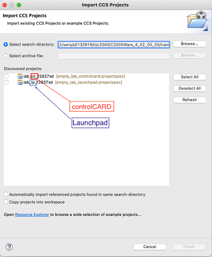
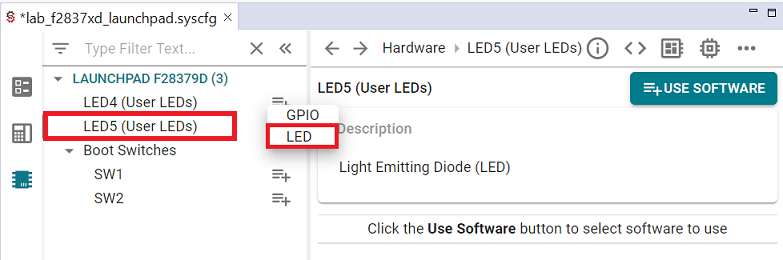

Enhanced Pulse Width Modulation (ePWM) Lab#
The objective of this lab is to gain familiarity with the Enhanced Pulse Width Modulation (ePWM) module through a guided lab example. This lab will walk through generating a PWM signal of a specified frequency and duty cycle. It will then walk through the steps of sampling that PWM signal with the ADC, which requires using a second PWM signal to trigger the ADC. We will also measure the duty cycle and period of our first PWM signal with the eCAP module. This lab should leave readers more knowledgeable about the capabilities of C2000’s ePWM, eCAP, and ADC modules.
Solution#
All solutions are located in the directory: [C2000Ware_Install_Path]/training/device/[device_name].
Introduction#
In this lab, we will use the Sysconfig GUI to generate a waveform with one of the ePWM modules. The period and duty cycle of the PWM waveform will be measured by one of the eCAP modules. In addition, we will sample the PWM waveform using the ADC. We will store the corresponding samples in a circular buffer, which will allow us to view the PWM waveform inside of a Code Composer Studio debug session. The SysConfig GUI tool will also be used to configure the eCAP and ADC modules.

Lab Setup#
Hardware Setup#
You will need the following hardware for this lab:
A C2000 controlCARD or LaunchPad with the supplied USB cable.
Jumper cables.
Oscilloscope (optional).
Use the supplied USB cable to connect your C2000 board’s USB port to the standard USB Type-A connector in your computer. You should see some LEDs light up on your board. In addition to powering the board, a JTAG communication link is also established between the device and Code Composer Studio.
Later in the lab we will be routing the output pin of the PWM waveform to the input pin of the ADC, so make sure that you have enough jumper cables to facilitate this.
Software Setup#
The following software will need to be installed on your computer:
Import Empty Project#
Our first task is to import an empty project to our Code Composer Studio (CCS) workspace. The basic instructions are as follows:
Open CCS and go to Project→Import CCS Projects. A new window should appear. Ensure that the Select search-directory option is activated.
Click the Browse button and select the
[C20000ware_Install_dir]/training/device/[device]/empty_labdirectory. Note that the default Windows [C20000ware_Install_dir] isC:/ti/c2000/C2000Ware_4_xx_xx_xx.Under Discovered Projects, you should now see the
lab_[board]_[device]project. Select the appropriate project for either the control card or the launchpad.

Click Finish to import and copy the
lab_[board]_[device]project into your workspace.Rename the project to your liking
“Right-click on the project in Project Explorer pane”. Select ‘Rename’ from the drop down menu and rename the project to ‘c2000_epwm_lab’ or a name of your choosing.
Now click the ‘Down Arrow’ located to the left of the imported project to expand it and select lab_main.c. Right-click on the file, and select ‘Rename’ to rename the file to c2000_epwm_lab_main.c or a name of your choosing.
Configure the GPIO#
We will configure the necessary GPIO pins as shown below. Our PWM waveform will be output from ePWM1A. We will also configure one of the board LEDs as an indicator.
Steps to add GPIO configuration:#
In the project, open the
.syscfgfile by double-clicking it.In the SysConfig GUI, select the “Hardware” tab, as shown below.

If you have a Launchpad, click ‘+’ to add LED5. If you have a controlCard, click ‘+’ to add D2.
Select the LED option like below.

Configure ePWM1 and ePWM2#
For Devices F2837xD, F2837xS, F2838x, and F28003x:
The SYSCLK generated from the internal oscillator is higher than 100MHz on these devices. This means that the EPWM clock for F28003x is 120MHz. The maximum EPWM clock is still 100MHz on F2837xD, F2837xS, and F2838x, but the ADC clock is equal to the device SYSCLK. When clock dividers are selected in the following modules, you may need to modify your dividers to achieve exactly the same results.
You may also notice that your device has different parameters than the ones seen in the images below. Do not worry, as all of the essential parameters for this lab are available on all devices.
In this section, we will first configure ePWM1A to output a 2kHz PWM waveform
with a 25% duty cycle. We begin by setting the ePWM clock prescalars. The
ePWM clock frequency has been set to be 100MHz. If you have a F2837xD or F2838x
based device, the ePWM clock frequency is half of DEVICE_SYSCLK_FREQ by
default, otherwise DEVICE_SYSCLK_FREQ and the ePWM clock frequency are
equal. Since the time base counter is 16 bits wide and (10^8/2000 < 2^16),
there is no need to divide the ePWM clock. Hence, we set the clock
division to 1.
Next, we set the time base period. In this lab, we will use the up/down counting mode for a symmetric PWM waveform, which leads to
\(\text{Time Base Period}=\frac{f_{tbclk}}{2f_{pwm}}=\frac{100* 10^6}{2* 2000}=25000.\)
Note that for the strict up or down counting mode,
\(\text{Time Base Period}=\frac{f_{tbclk}}{f_{pwm}}-1.\)
Additionally, we have set the period load mode to shadow and set the phase shift to be 0 since we will not be performing any synchronization.
Now we will configure the parameters of the counter compare module for ePWM1A to achieve a 25% duty cycle. Since we are in up/down counting mode, a counter compare event will happen twice: once during the up count, and once during the down count. This suggests that
\(\text{Counter Compare Value}=(1-\frac{duty}{100})* tbprd=(1-\frac{25}{100})25000=18750\)
for a 25% duty cycle. Notice that the global variable PwmDuty has been
initialized accordingly. For the strict up or down count modes,
\(\text{Counter Compare Value}=(1-\frac{duty}{100})*(tbprd+1)-1.\)
Next, we set the counter compare load mode to load a new counter compare value
on zero or at the period count. This will allow us to change the value of
PwmDuty in a real-time CCS debug session. Shadow load mode is also enabled to
avoid output glitches when we change the counter compare value.
Finally, we set the counter mode to up/down mode. Note that we still have not enabled the clock to the ePWM modules. This completes the configuration of ePWM1A.
In order to view the PWM waveform in CCS, we must sample the PWM waveform using the ADC. The ePWM modules can be used to trigger a SOC event on the ADC. We will use this technique to sample our PWM waveform with a sampling rate of 50kHz using ePWM2. The first steps in the configuration of ePWM2 are identical to ePWM1. However, we will use the up count mode rather than the up/down counting mode, thus, to achieve a sampling rate of 50kHz, we need
\(\text{Time Base Period}=\frac{100* 10^6}{50000}-1=1999.\)
Next, we configure ePWM2 to trigger SOCA on the ADC. Notice that the trigger source is set to be the time base period event, hence, a SOC event will happen at a rate of 50kHz. The event prescale setting is set to 1 since we would like the SOC to happen at each time base period event.
Table of all Changes to be made in SysConfig:
Module |
EPWM1 |
EPWM2 |
ADC |
ECAP |
InputXBAR |
|---|---|---|---|---|---|
Change 1 |
Change Clock Dividers |
Change Clock Dividers |
Set clock prescaler |
Set ‘Capture stops at Event’ |
Set ‘INPUTs to be used’ |
Change 2 |
Set time base period |
Set time base period |
Enable ADC SOC |
Set Event Polarities |
n/a |
Change 3 |
Set count mode |
Set count mode |
Configure ADC Trigger Settings |
Register and Enable Interrupt |
n/a |
Change 4 |
Set counter compare |
Configure Event Trigger Settings |
Set ADC Sample Window |
Select Interrupt Source |
n/a |
Change 5 |
Shadow Mode Enable |
Pinmux configuration |
Enable ADCINT1 |
Change ECAP Interrupt Handler |
n/a |
Change 6 |
Events to configure for ePWMxA output |
n/a |
Register Interrupt 1 with the PIE |
Enable Interrupt in PIE |
n/a |
Change 7 |
Pinmux configuration |
n/a |
Change ADC Interrupt Handler |
n/a |
n/a |
Change 8 |
n/a |
n/a |
Enable Interrupt 1 with the PIE |
n/a |
n/a |
To implement these specifications with SysConfig, first click the ‘+’ by EPWM in the SysConfig screen to open an instance of the EPWM module.

Expand the ‘EPWM Time Base’ dropdown menu, and apply the changes circled below.
Expand the ‘EPWM Counter Compare’ dropdown menu, and again apply the circled changes.

Expand the ‘EPWM Action Qualifier’ dropdown menu, then apply the changes circled below.
Expand the ‘ePWMxA Event Output Configuration’ dropdown menu, then apply the changes circled below.

Expand the ‘PinMux Peripheral and Pin Configuration’ dropdown menu. For ‘EPWM Peripheral’, make sure to select instance EPWM1. Also, make sure to select ‘GPIO0’ for ‘EPWMA’ and select ‘GPIO1’ for ‘EPWMB’, as shown below. The pin number will vary based on hardware.

Now click the ‘+’ by EPWM to open another instance of the EPWM module.
Expand the ‘EPWM Time Base’ dropdown menu, and apply the changes circled below.

Expand the ‘EPWM Event-Trigger’ dropdown menu, and apply the changes circled below.

Expand the ‘PinMux Peripheral and Pin Configuration’ dropdown menu, and apply the changes circled below. Also, make sure to select ‘GPIO2’ for ‘EPWMA’ and select ‘GPIO3’ for ‘EPWMB’, as shown below. The pin number will vary based on hardware.
This concludes the configuration of the ePWM modules.
Configure the ADC#
In the previous section, we explained that ePWM2 would be triggering a SOC event on the ADC. In this section, we will provide the code to configure the ADC. More details about the configuration of the ADC can be found in Analog-to-Digital Converter (ADC). However, notice that we have setup a SOC to be triggered by ePWM2 and that we have setup the ADC to interrupt at the end of a conversion. Hence, the interrupt service routine will be triggered at a rate of 50kHz. The ADC is also setup in continuous mode so that the ADC register always contains the most recent sample.
Add ADC by clicking the ‘+’ by ADC in the SysConfig screen. Make sure to make the changes circled below. If your device SYSCLK is not 100MHz, you will need to change the ADC Clock Prescaler to acheive the same results.
For the ‘SOC0 Sample Window[SYSCLK counts]’ parameter, the same value may result in a different ‘SOC0 Sample Time[ns]’ on different devices, due to varying SYSCLK frequencies across devices. Make sure that the generated ‘SOC0 Sample Time[ns]’ is about 80ns.

Expand the ‘Register PIE Interrupt Handlers’ dropdown menu, and register Interrupt 1, as shown below. This should trigger the ‘ADCA Interrupt 1’ dropdown menu to appear.
Expand the ‘ADCA Interrupt 1’ dropdown menu, and change the interrupt handler to ‘adcA1ISR’. Make sure this interrupt handler matches the name of the interrupt in the ISR code snippet below. Also click the checkbox to enable the interrupt in PIE, as shown below.
For Devices F280025C, F280039C, F2800137, and F2800157:
Set analog reference voltage using asysctl parameter.
Add ASYSCTL by clicking ‘+’ in ANALOG group and then add internal reference of 2.5V.

Define the ADC interrupt service routine#
In this section, we will define the ADC interrupt service routine. This
interrupt service routine will store samples from the ADC in a circular buffer
so we can view the PWM waveform using the real-time debug features in CCS. The
necessary code is shown below. In addition to storing the ADC samples in a
circular buffer, this interrupt service routine also toggles one of the board
LEDs at a rate of 1Hz and allows for the duty cycle of ePWM1A to be changed on
the fly or modulated during a CCS debug session. The global flag variable
DutyModOn controls whether or not the duty cycle is modulated. When
DutyModOn is set, the PWM waveform duty cycle will change slowly from 5% to
95% and alternate between increasing and decreasing.
__interrupt void adcA1ISR(void)
{
// Clear interrupt flags.
Interrupt_clearACKGroup(INT_myADC0_1_INTERRUPT_ACK_GROUP);
ADC_clearInterruptStatus(myADC0_BASE, ADC_INT_NUMBER1);
// Write contents of the ADC register to a circular buffer.
*AdcBufPtr = ADC_readResult(myADC0_RESULT_BASE, myADC0_SOC0);
if (AdcBufPtr == (AdcBuf + 49))
{
// Force buffer to wrap around.
AdcBufPtr = AdcBuf;
} else {
AdcBufPtr += 1;
}
if (LedCtr >= 49999) {
// Divide 50kHz sample rate by 50e3 to toggle LED at a rate of 1Hz.
GPIO_togglePin(myBoardLED0_GPIO);
LedCtr = 0;
} else {
LedCtr += 1;
}
if (DutyModOn) {
// Divide 50kHz sample rate by 16 to slow down duty modulation.
if (DutyModCtr >= 15) {
if (DutyModDir == 0) {
// Increment State => Decrease Duty Cycle.
if (ePwm_curDuty >= ePwm_MinDuty) {
DutyModDir = 1;
} else {
ePwm_curDuty += 1;
}
} else {
// Decrement State => Increase Duty Cycle.
if (ePwm_curDuty <= ePwm_MaxDuty) {
DutyModDir = 0;
} else {
ePwm_curDuty -= 1;
}
}
DutyModCtr = 0;
} else {
DutyModCtr += 1;
}
}
// Set the counter compare value.
EPWM_setCounterCompareValue(myEPWM0_BASE, EPWM_COUNTER_COMPARE_A, ePwm_curDuty);
}
Configure eCAP1#
We can use the eCAP peripheral to measure the duty cycle and period of our PWM
waveform. We start by resetting the eCAP1 peripheral, disabling time stamp
capture, and stopping the internal counter. This will put the eCAP1 registers
in a known state, and it will freeze the internal eCAP counter. This way, when
we start the eCAP, it will initially behave in a predictable manner which can
be important for many practical usage scenarios. Notice that XBAR_INPUT7 has
been mapped to GPIO0 which contains our PWM waveform. Accordingly, the input of
eCAP1 is set to be ECAP_INPUT_INPUTXBAR7.
The following code enables continuous capture mode with 4 sequential timestamped events. Notice the configuration of the 4 different event polarities. This configuration allows us to measure the duty cycle from events 1 and 2, and measure the period from events 1 and 3. Since we need the internal counter to hold its count from event 1 to event 4, we have disabled the counter reset on these events.
Next, we enable an interrupt after event 3 is captured. This allows us to calculate the period and duty cycle in the interrupt service routine.
Add ECAP by clicking ‘+’ in SysConfig screen, and apply the changes circled below.
Expand the ‘eCAP Interrupt’ dropdown menu, and change the interrupt handler to ‘ecap1ISR’. Make sure this interrupt handler matches the name of the interrupt in the ISR code snippet below. Also click the checkbox to enable the interrupt in PIE, as shown below.

Add INPUTXBAR by clicking ‘+’ in SysConfig screen, and apply the changes circled below. Make sure the interrupt handler matches the name of the interrupt in the ISR code snippet below.

This concludes the configuration of the eCAP and inputXbar.
Define the eCAP interrupt service routine#
In the last section, we enabled an interrupt on the eCAP. The corresponding
interrupt service routine is named ecap1ISR and is shown below. The global
variable eCapPwmPeriod stores the difference between the eCAP timestamps from
event 3 and 1, which allows us to calculate the period. Since the eCAP units
operate on the system clock, the frequency of the PWM waveform can be
calculated using
\(f_{pwm}\approx\frac{\text{DEVICE_SYSCLK_FREQ}}{\text{eCapPwmPeriod}}.\)
The global variable eCapPwmDuty stores the difference between the eCAP
timestamps from event 2 and 1, which allows us to calculate the duty cycle. The
duty cycle can be calculated vias
\(\text{duty}\approx\frac{\text{eCapPwmDuty}}{\text{eCapPwmPeriod}}100.\)
__interrupt void ecap1ISR(void)
{
Interrupt_clearACKGroup(INT_myECAP0_INTERRUPT_ACK_GROUP);
ECAP_clearGlobalInterrupt(myECAP0_BASE);
ECAP_clearInterrupt(myECAP0_BASE, ECAP_ISR_SOURCE_CAPTURE_EVENT_3);
eCapPwmDuty = (int32_t)ECAP_getEventTimeStamp(myECAP0_BASE, ECAP_EVENT_2) -
(int32_t)ECAP_getEventTimeStamp(myECAP0_BASE, ECAP_EVENT_1);
eCapPwmPeriod = (int32_t)ECAP_getEventTimeStamp(myECAP0_BASE, ECAP_EVENT_3) -
(int32_t)ECAP_getEventTimeStamp(myECAP0_BASE, ECAP_EVENT_1);
}
Define Global Macros and Variables#
First, we will define some necessary macros and global variables.
uint32_t ePwm_TimeBase;
uint32_t ePwm_MinDuty;
uint32_t ePwm_MaxDuty;
uint32_t ePwm_curDuty;
uint16_t AdcBuf[50]; // Buffer to store ADC samples.
uint16_t *AdcBufPtr = AdcBuf; // Pointer to ADC buffer samples.
uint16_t LedCtr = 0; // Counter to slow down LED toggle in ADC ISR.
uint16_t DutyModOn = 0; // Flag to turn on/off duty cycle modulation.
uint16_t DutyModDir = 0; // Flag to control duty mod direction up/down.
uint16_t DutyModCtr = 0; // Counter to slow down rate of modulation.
int32_t eCapPwmDuty; // Percent = (eCapPwmDuty/eCapPwmPeriod)*100.
int32_t eCapPwmPeriod; // Frequency = DEVICE_SYSCLK_FREQ/eCapPwmPeriod.
Define main()#
Next, we will populate main() as shown below.
That being said, we will still need to know the system clock frequency in order
to configure our PWM waveform frequency. The system clock frequency value is
defined via the macro DEVICE_SYSCLK_FREQ in [projectroot]/device/device.h. Observe that
the main function only handles initialization routines. Most of the activity in
this lab lies in the peripherals themselves and their interrupt service
routines.
void main(void)
{
Device_init();
Interrupt_initModule();
Interrupt_initVectorTable();
Board_init();
// Initialize variables for ePWM Duty Cycle
ePwm_TimeBase = EPWM_getTimeBasePeriod(myEPWM0_BASE);
ePwm_MinDuty = (uint32_t)(0.95f * (float)ePwm_TimeBase);
ePwm_MaxDuty = (uint32_t)(0.05f * (float)ePwm_TimeBase);
ePwm_curDuty = EPWM_getCounterCompareValue(myEPWM0_BASE, EPWM_COUNTER_COMPARE_A);
EINT;
ERTM;
for (;;) {
NOP;
}
}
This concludes the coding portion of this lab.
Build and run interactive debug session#
Ensure that the USB cable from your LaunchPad or controlCARD is connected to your computer.
Under the Build button, activate the CPU1_RAM build configuration.
Make sure your project’s target configuration file (.ccxml) is active.
Connect the ePWM1A GPIO pin to the ADCINA0 GPIO pin using a jumper cable. If you have an oscilloscope, connect a probe to the ePWM1A GPIO pin on your board.
LaunchPad
Device |
ADCINA0 Pin |
EPWM1A Pin |
|---|---|---|
F28379D |
30 |
40 |
F2838x |
n/a |
n/a |
F28004x |
70 |
40 |
F28002x |
69 |
40 |
F28003x |
70 |
80 |
F280013x |
n/a |
n/a |
F280015x |
n/a |
n/a |
ControlCARD
Device |
ADCINA0 Pin |
EPWM1A Pin |
|---|---|---|
F28379D |
9 |
49 |
F2838x |
9 |
49 |
F28004x |
9 |
49 |
F28002x |
9 |
49 |
F28003x |
9 |
49 |
F280013x |
9 |
49 |
F280015x |
9 |
49 |
Now we will start the debug session. Under the debug button, start the debug session using the new configuration. You should now see the debugging session open up and the debugger should have reached
main().Click the Resume button. You should see the LED on your board toggling at about 1Hz which indicates that the sampling rate is 50kHz as desired.
Find the
eCapPwmDutyandeCapPwmPeriodglobal variables in the debug source code window, highlight their text, right click, and click Add Watch Expression. Activate the Continuous Refresh option. If all is well, the expressions pane should show values ofeCapPwmDutyandeCapPwmPeriodsuch that \(\frac{\text{eCapPwmDuty}}{\text{eCapPwmPeriod}}100\approx25\) which indicates the correct duty cycle of 25%. Additionally, \(\frac{\text{DEVICE_SYSCLK_FREQ}}{\text{eCapPwmPeriod}}\approx2000\) which indicates the correct PWM frequency of 2kHz.
Now we will view our waveform from the samples in
AdcBuf. Click on Tools→Graph→Single Time, set Acquisition Buffer Size to be 50, set Dsp Data Type to be 16 bit unsigned integer, set Sampling Rate Hz to be 50000, set Start Address to be AdcBuf, set Time Display Unit to be us, and leave the other settings as their default value. Click OK and you should see the plot window open up. Activate the Continuous Refresh option in the plot window. You should now see several periods of the PWM waveform in the plot updating in real-time. If desired, you can use the measurement tool to verify the duty cycle and period.
Important
Note: If you do not see CCS menu Tools → Graph, please refer to Getting Started (Setting CCS for graph) to see the instruction on how to enable CCS graphing tool in your perspective.


Next, add
PwmDutyto the watch expression list. Play with values ofPwmDutyfrom 1250 to 23750. You should see the duty cycle of the PWM waveform change in real-time in the plot window. The readings from the eCAP should also update in real-time.Add
DutyModOnto the watch expression list. Change the value to 1. You should now see the duty cycle modulate in real-time from 5% to 95% in the plot window.Terminate the debug session and close the project. This concludes the lab assignment.
Full Solution#
The full solution to this lab exercise is included as part of the C2000Ware
SDK. Import the project from <c2000ware_install_path>/training/device/<device_name>/control_peripherals/lab_ePwm_eCap.
Feedback
Please provide any feedback you may have about the content within C2000 Academy to: c2000_academy_feedback@list.ti.com